Софт от Аддерли
MakuTweaker 1.62.0
MakuTweaker, это полезная программа
Которая позволяет быстро настроить те вещи, которые не так легко найти,
А так же, если у вас не активированная
Windows, вы все равно сможете настраивать панель задач и пуск!
Для запуска программы нужен
NET Framework 4.7.2, и Windows 10/11
Имеется поддержка Русского, Украинского, Английского и Японского языка!
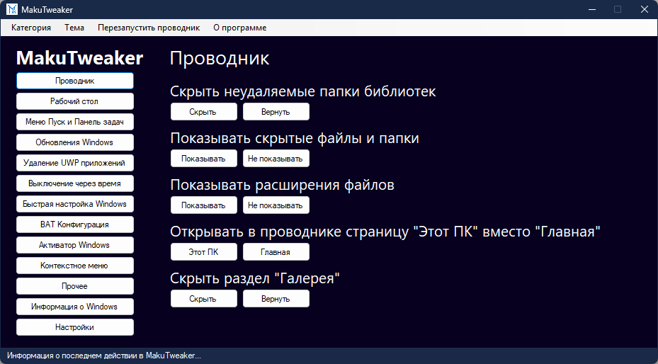
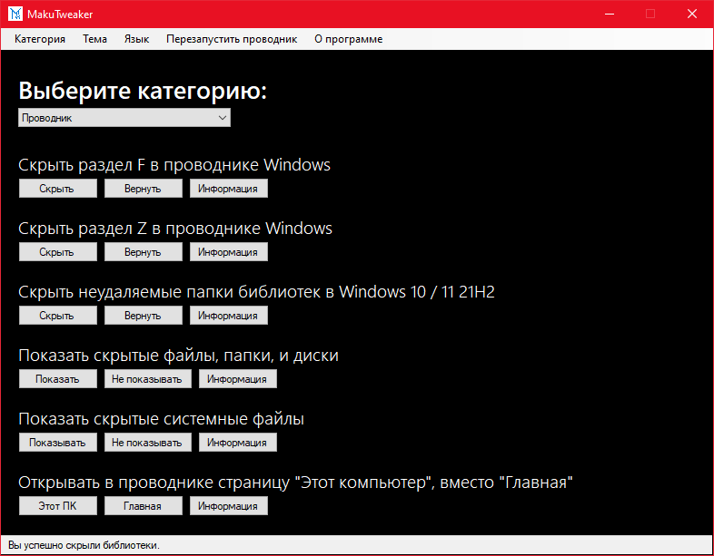
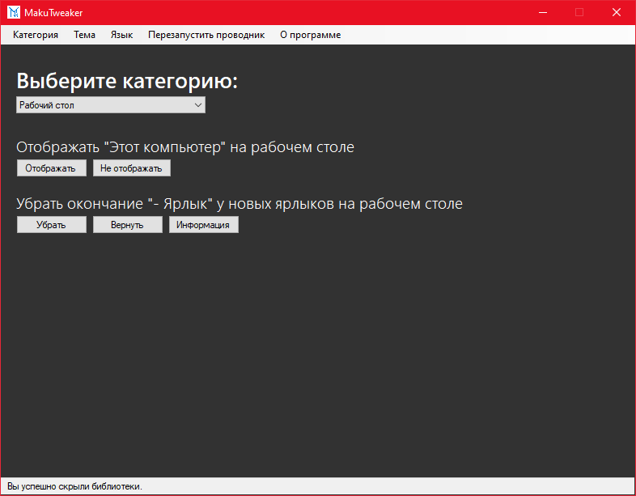
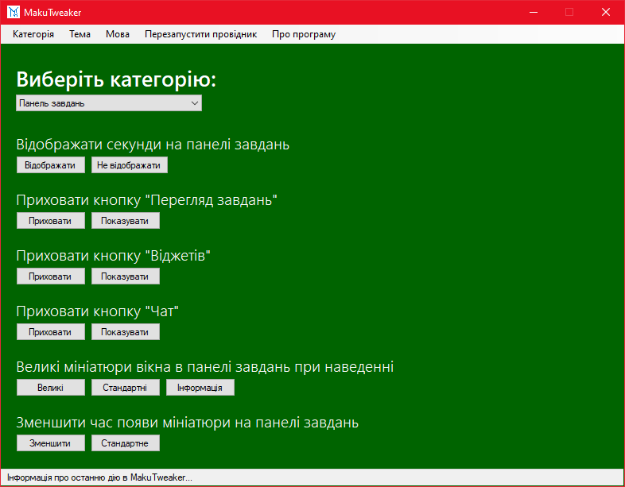
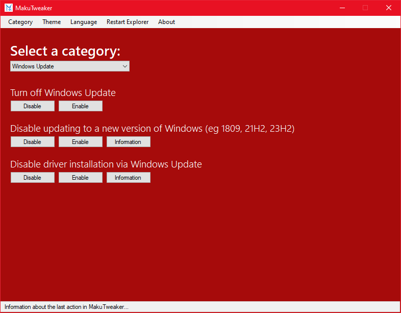
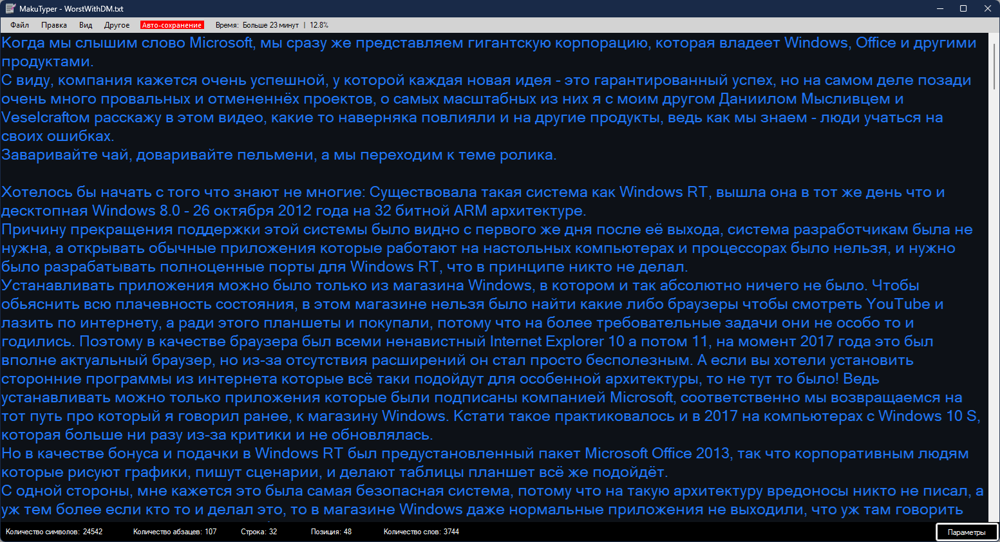
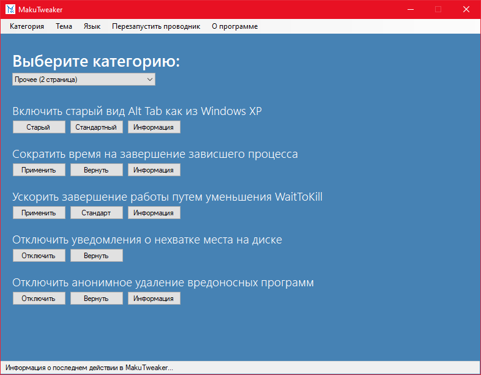
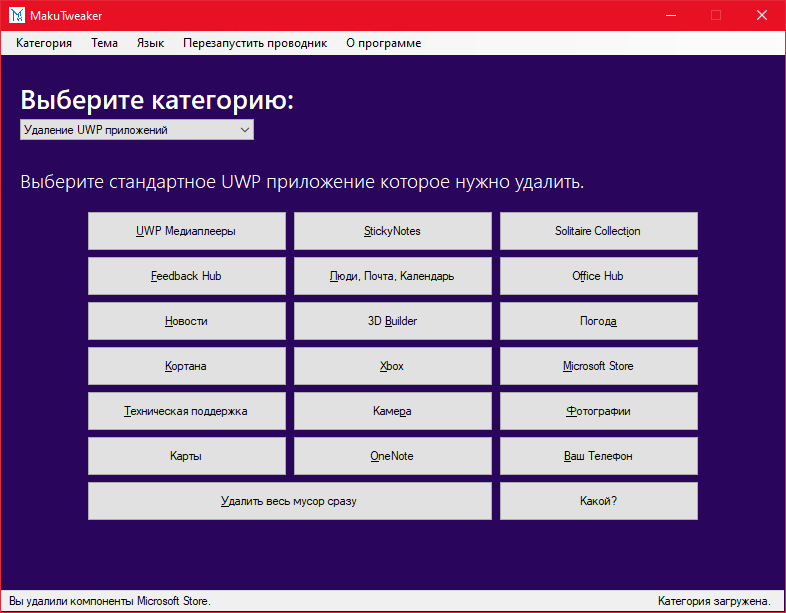
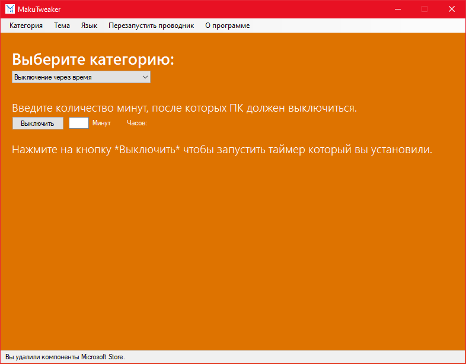
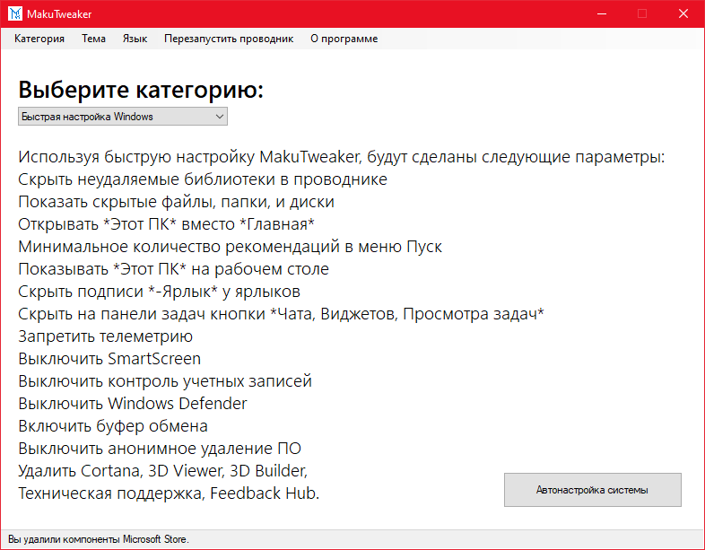
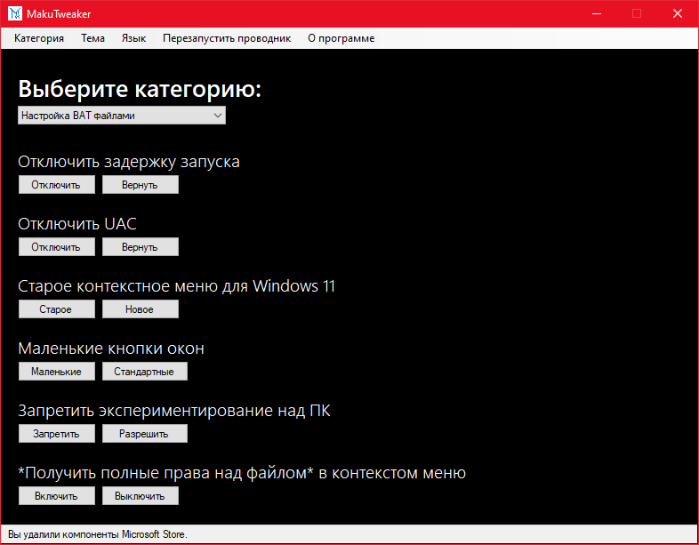
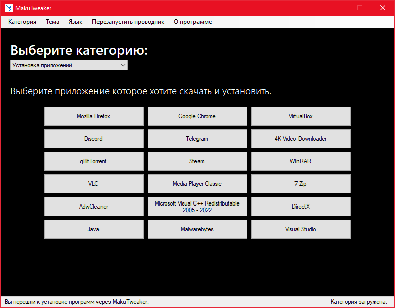
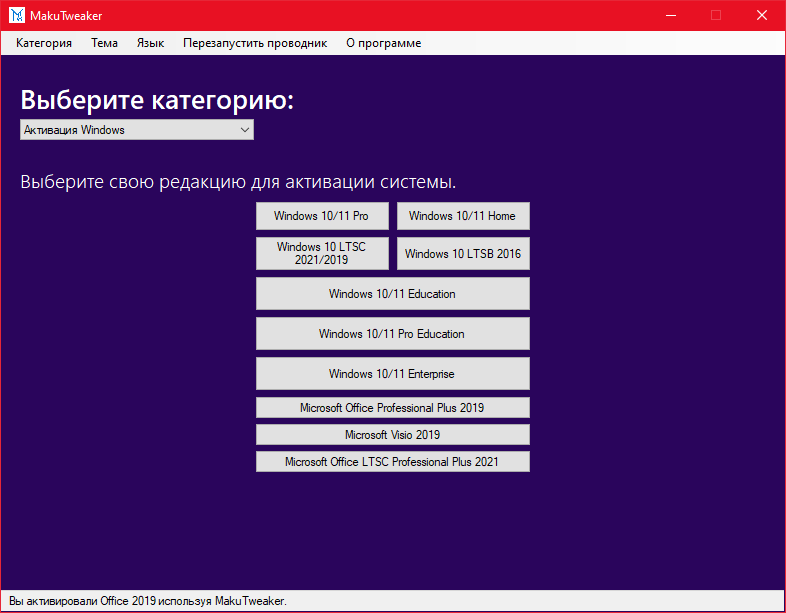
Скачать MakuTweaker 1.62.0
MakuTweaker для старых Windows
MakuTyper 1.24.0
MakuTyper - это блокнот который может заменить стандартный, и даже больше!
Тёмная тема, границы строк, автосохранение текста, полноценная поддержка 4 языков, прозрачность окна, поверх всех окон,
и многое другое!
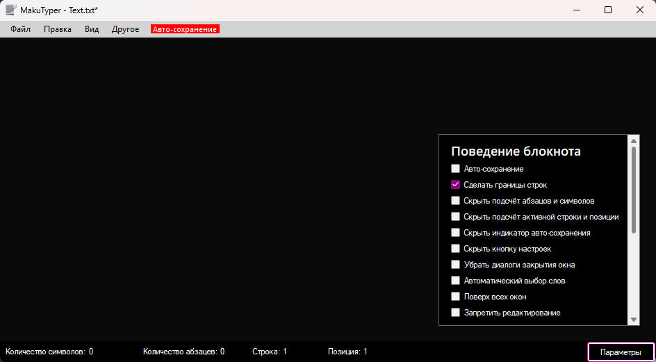
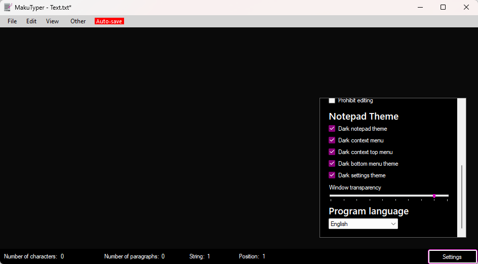
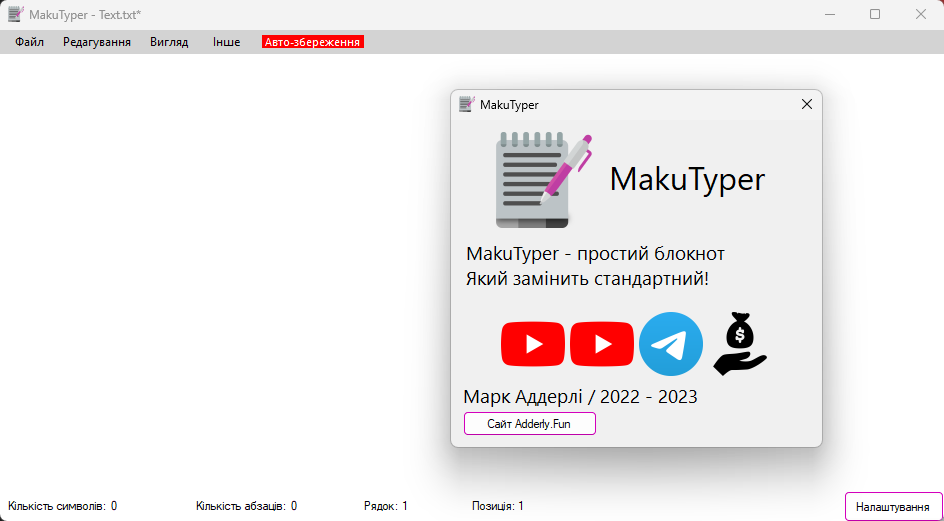
Скачать MakuTyper 1.24.0
MakuCheck 1.2.9
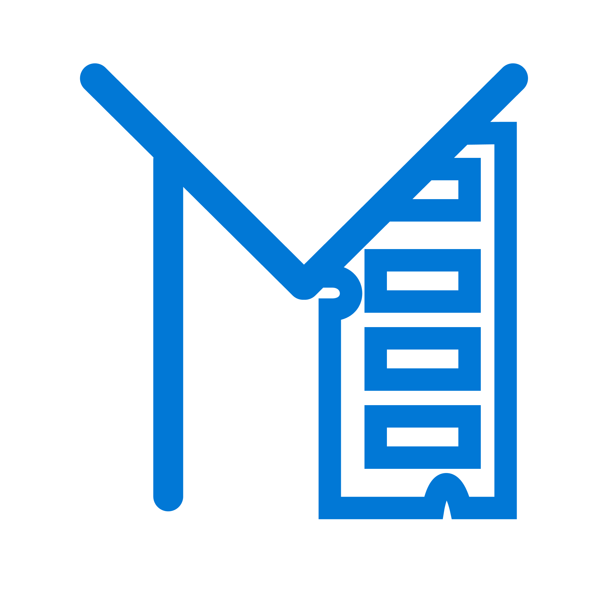
MakuChecker - программа для просмотра характеристик ПК, таких как: Процессор, Оперативная память, Материнская плата, первая видеокарта, и если есть, еще и вторая.
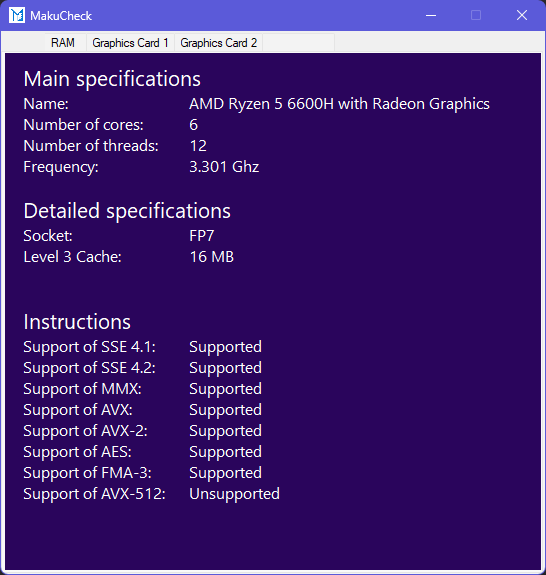
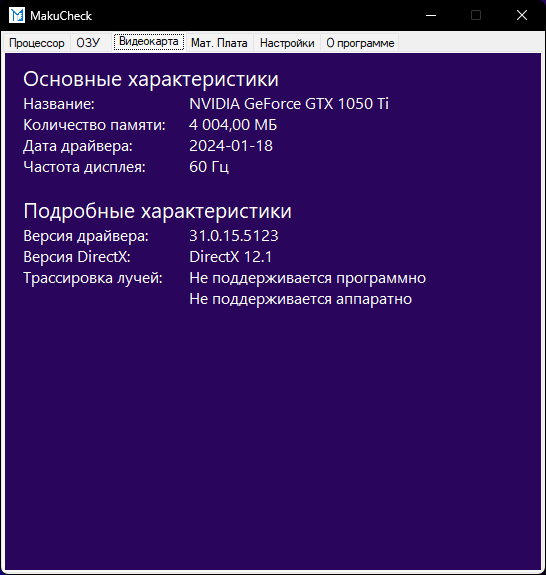
Скачать MakuCheck 1.2.9